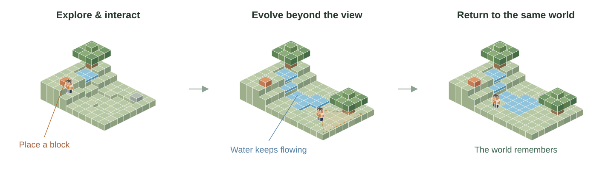
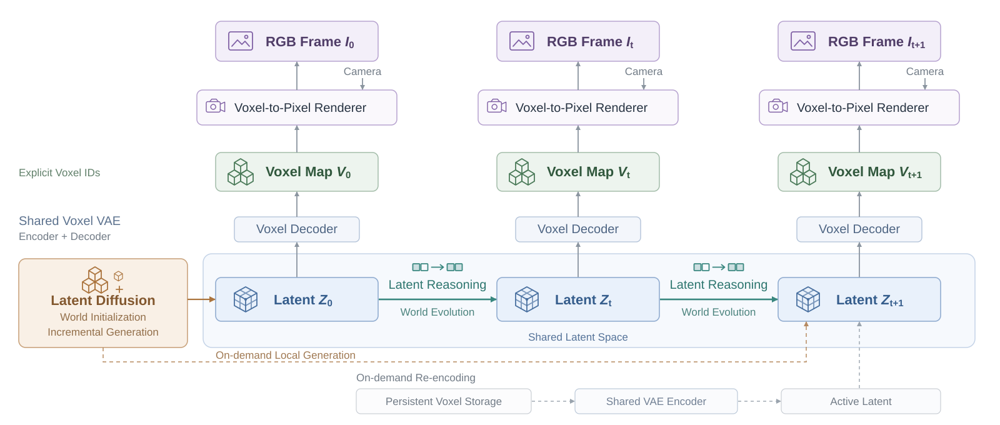

01 / Generate
Latent Diffusion
Move through the world.
Generate what comes next.


A generative world model that persists over long horizons, evolves autonomously beyond the current view, and supports sustained exploration and interaction.
Keep the terrain.
Let the water flow.
PERSIST-S / XL · Controlled A/B/C Evaluation

Generation≠Evolution≠Rendering
01 / Generate
Move through the world.
Generate what comes next.
02 / Evolve
The same terrain.
The next physical state.

03 / Observe
From voxels
to vivid pixels.
Prioritize Diffusion and Reasoning.
Use the game engine for rendering first.
What success should mean
A persistent world.
A world that keeps changing.